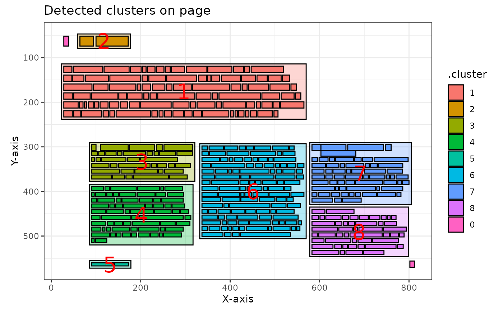
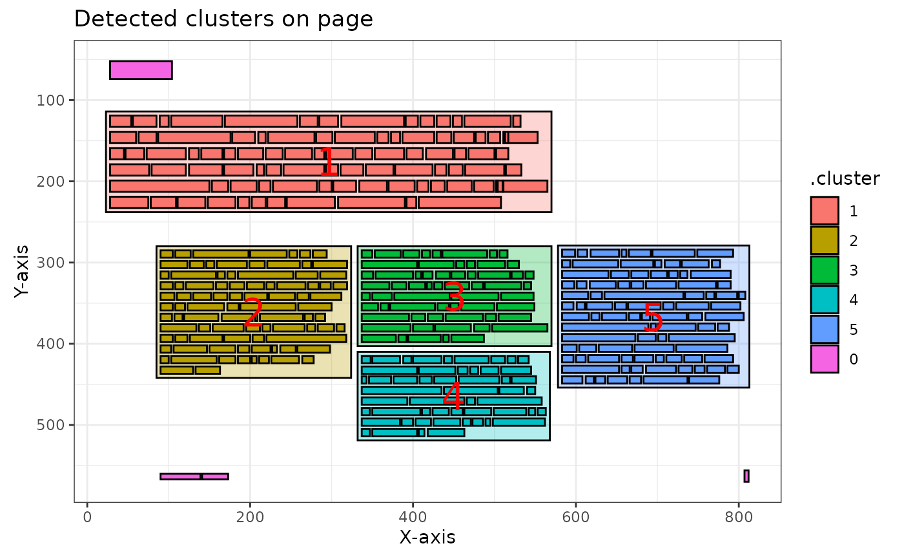
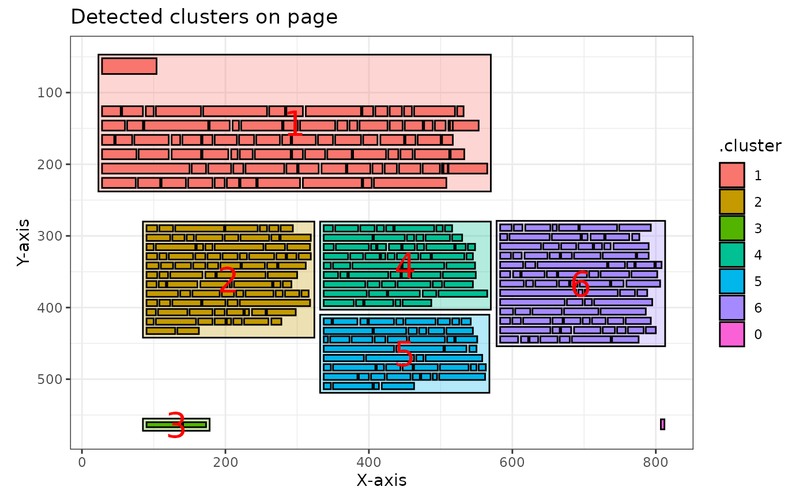
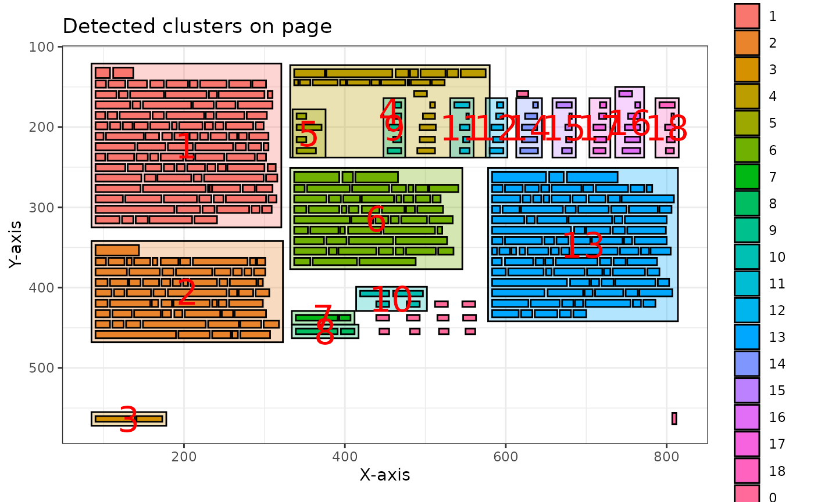
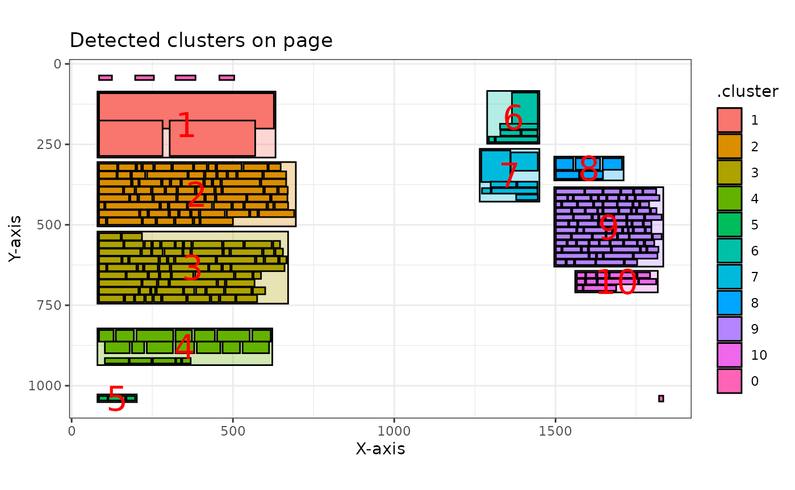

pdftextclusteR: detect text clusters in PDF files
Source:vignettes/pdftextclusteR.Rmd
pdftextclusteR.RmdThe pdftools
package is available for importing PDF files. However, this package does
not work optimally when importing PDF files with multiple columns and
text boxes. Since the pdftools::pdf_text() function from
the pdftools package processes text line by line, it often
fails to maintain the context of the text. As a result, the output may
contain sentences with unrelated fragments of text from different parts
of the page. Words that are not placed in the correct context are
unsuitable for text analysis.
However, the words grouped into clusters by this package using a Density-Based Spatial Clustering algorithm are likely to be contextually related and thus suitable for text analysis. This package directly utilizes the clustering algorithms implemented in the dbscan package.
For the examples in this vignette, the Quality Agenda 2024-2027 Mediacollege Amsterdam was used. More information about this report can be found at rijksoverheid.nl.
Loading Packages
library(pdftools)
#> Using poppler version 24.02.0
library(pdftextclusteR)Loading Data
Data is loaded using the pdftools::pdf_data() function.
The result is a list object with a tibble for each page containing the
data.
#' Reading a PDF document with `pdftools`
ka <- pdf_data("https://www.rijksoverheid.nl/binaries/rijksoverheid/documenten/rapporten/2024/06/10/kwaliteitsagenda-2024-2027-mediacollege-amsterdam/Kwaliteitsagenda+2024-2027+Mediacollege+Amsterdam.pdf")The metadata for the first 5 words on page 7 are, for example:
head(ka[[7]], 5)
#> width height x y space text
#> 1 76 22 28 52 FALSE Inleiding
#> 2 26 14 28 119 TRUE Waar
#> 3 29 14 56 119 TRUE liggen
#> 4 11 14 89 119 TRUE de
#> 5 63 14 103 119 TRUE belangrijksteDetecting text clusters
Single page clustering
Clusters - usually columns and text boxes - are detected with the
pdf_detect_clusters() function. When applied to a single
page, the function returns a tibble with each word assigned to a
cluster.
ka_clusters <- ka[[7]] |>
pdf_detect_clusters()
#> ℹ Clusters detected and renumbered: 6 on this page.
head(ka_clusters, 5)
#> # A tibble: 5 × 8
#> width height x y space text .cluster noise
#> <int> <int> <int> <int> <lgl> <chr> <fct> <lgl>
#> 1 76 22 28 52 FALSE Inleiding 0 TRUE
#> 2 26 14 28 119 TRUE Waar 1 FALSE
#> 3 29 14 56 119 TRUE liggen 1 FALSE
#> 4 11 14 89 119 TRUE de 1 FALSE
#> 5 63 14 103 119 TRUE belangrijkste 1 FALSEMultiple page clustering
One of the key features of pdftextclusteR is the ability
to process multiple pages at once. This is particularly useful when
analyzing entire documents. Let’s process the first 3 pages of our
example document:
# Process first 10 pages
multiple_page_clusters <- ka[1:10] |>
pdf_detect_clusters()
#> ℹ Processing 10 pages
#> ✔ Clusters successfully detected and renumbered on 10 pages.
# Check the structure of the result
str(multiple_page_clusters, max.level = 1)
#> List of 10
#> $ : tibble [9 × 8] (S3: tbl_df/tbl/data.frame)
#> $ : tibble [117 × 8] (S3: tbl_df/tbl/data.frame)
#> $ : tibble [113 × 8] (S3: tbl_df/tbl/data.frame)
#> $ : tibble [311 × 8] (S3: tbl_df/tbl/data.frame)
#> $ : tibble [418 × 8] (S3: tbl_df/tbl/data.frame)
#> $ : tibble [130 × 8] (S3: tbl_df/tbl/data.frame)
#> $ : tibble [388 × 8] (S3: tbl_df/tbl/data.frame)
#> $ : tibble [133 × 8] (S3: tbl_df/tbl/data.frame)
#> $ : tibble [4 × 8] (S3: tbl_df/tbl/data.frame)
#> $ : tibble [433 × 8] (S3: tbl_df/tbl/data.frame)The result is a list of tibbles, where each tibble contains the cluster information for one page. The function automatically displays a progress bar when processing multiple pages and provides a summary of the results.
Plotting the Clusters
Plotting a single page
Using the pdf_plot_clusters() function, you can create a
visual representation of the detected clusters for a single page:
ka_clusters |>
pdf_plot_clusters()
If you compare this with the source PDF page, you can see that the package has clustered the text quite accurately in this case:

Plotting multiple pages
The pdf_plot_clusters() function can also be applied to
multiple pages:
# Plot the tenth page of the multiple page result
multiple_page_clusters[[10]] |>
pdf_plot_clusters()
You can plot all pages at once, which returns a list of ggplot objects:
# This returns a list of ggplot objects
all_plots <- multiple_page_clusters |>
pdf_plot_clusters()
#> ℹ Total pages provided: 10
#> ✔ Successfully plotted 10 pages.
# You can access individual plots
all_plots[[8]]
Extract text from clusters
Extracting from a single page
The text of the detected clusters can be extracted with the
pdf_extract_clusters() function:
ka_clusters_text <- ka_clusters |>
pdf_extract_clusters()
# View the first 5 clusters
head(ka_clusters_text, 5)
#> # A tibble: 5 × 3
#> .cluster word_count text
#> <fct> <int> <chr>
#> 1 0 2 "Inleiding\n 7\n"
#> 2 1 89 "Waar liggen de belangrijkste ontwikkelopgaven voor onze …
#> 3 2 89 "Met deze Kwaliteitsagenda 2024-2027 wil MA haar\n ambiti…
#> 4 3 3 "Kwaliteitsagenda 2024-2027\n"
#> 5 4 63 "We bouwen voort op de doelstellingen uit de\n Kwaliteits…Extracting from multiple pages
When extracting from multiple pages, the function returns a list of tibbles:
multiple_page_text <- multiple_page_clusters |>
pdf_extract_clusters()
#> ℹ Extracting text from 10 pages
#> ✔ Text successfully extracted from 10 pages.
# Check the structure
str(multiple_page_text, max.level = 1)
#> List of 10
#> $ : tibble [3 × 3] (S3: tbl_df/tbl/data.frame)
#> $ : tibble [4 × 3] (S3: tbl_df/tbl/data.frame)
#> $ : tibble [4 × 3] (S3: tbl_df/tbl/data.frame)
#> $ : tibble [14 × 3] (S3: tbl_df/tbl/data.frame)
#> $ : tibble [19 × 3] (S3: tbl_df/tbl/data.frame)
#> $ : tibble [3 × 3] (S3: tbl_df/tbl/data.frame)
#> $ : tibble [7 × 3] (S3: tbl_df/tbl/data.frame)
#> $ : tibble [9 × 3] (S3: tbl_df/tbl/data.frame)
#> $ : tibble [2 × 3] (S3: tbl_df/tbl/data.frame)
#> $ : tibble [9 × 3] (S3: tbl_df/tbl/data.frame)
# View the first 5 clusters from the fifth page
head(multiple_page_text[[5]], 5)
#> # A tibble: 5 × 3
#> .cluster word_count text
#> <fct> <int> <chr>
#> 1 1 109 "MA Visie\n We halen buiten naar binnen en brengen binnen…
#> 2 4 27 "Verdeling onderwijsgevenden, Staf en College van Bestuur…
#> 3 2 68 "Personeel\n MA heeft in 2022 in totaal 391 personeelsled…
#> 4 3 3 "Kwaliteitsagenda 2024-2027\n"
#> 5 11 5 "aantal\n 2\n 208\n 86\n 296\n"When using the combine = TRUE parameter all text is
combined in one Tibble with an extra variable page:
multiple_page_text_tibble <- multiple_page_clusters |>
pdf_extract_clusters(combine = TRUE)
#> ℹ Extracting text from 10 pages
#> ✔ Combined text from 10 pages into a single tibble.
multiple_page_text_tibble |>
dplyr::filter(page == 5) |>
head(5)
#> # A tibble: 5 × 4
#> page .cluster word_count text
#> <int> <fct> <int> <chr>
#> 1 5 1 109 "MA Visie\n We halen buiten naar binnen en brengen …
#> 2 5 4 27 "Verdeling onderwijsgevenden, Staf en College van B…
#> 3 5 2 68 "Personeel\n MA heeft in 2022 in totaal 391 persone…
#> 4 5 3 3 "Kwaliteitsagenda 2024-2027\n"
#> 5 5 11 5 "aantal\n 2\n 208\n 86\n 296\n"Different algorithms
The dbscan package is used to detect the clusters. This package supports four different algorithms:
dbscan: The default algorithm, which generally provides good resultsjpclust: Jarvis-Patrick clustering algorithmsNNclust: Shared nearest neighbor clusteringhdbscan: Hierarchical DBSCAN
Each algorithm has different parameters that can be tuned for optimal results:
# Example with sNNclust algorithm
ka[[7]] |>
pdf_detect_clusters(algorithm = "sNNclust", k = 5, eps = 2, minPts = 3) |>
pdf_plot_clusters()
#> ℹ Clusters detected and renumbered: 5 on this page.
# Example with hdbscan algorithm
ka[[7]] |>
pdf_detect_clusters(algorithm = "hdbscan", minPts = 2) |>
pdf_plot_clusters()
#> ℹ Clusters detected and renumbered: 6 on this page.
Complete workflow example
Here’s a complete workflow example that processes multiple pages, plots the results, and extracts the text:
# Select pages 5-7
selected_pages <- ka[5:7]
# Detect clusters across all pages
clusters <- selected_pages |>
pdf_detect_clusters()
#> ℹ Processing 3 pages
#> ✔ Clusters successfully detected and renumbered on 3 pages.
# Plot clusters for visualization (just showing the first page plot)
clusters[[1]] |>
pdf_plot_clusters()
# In practice, you'd access individual plots from the resulting list
# e.g., plots <- clusters |> pdf_plot_clusters(); plots[[1]]
# Extract text from all clusters
text_data <- clusters |>
pdf_extract_clusters()
#> ℹ Extracting text from 3 pages
#> ✔ Text successfully extracted from 3 pages.
# Analyze the first page's text (as an example)
text_data[[1]] |>
dplyr::arrange(desc(word_count)) |>
head(3)
#> # A tibble: 3 × 3
#> .cluster word_count text
#> <fct> <int> <chr>
#> 1 1 109 "MA Visie\n We halen buiten naar binnen en brengen binnen…
#> 2 13 98 "Dynamische MA Community\n We staan voor de uitdaging om …
#> 3 2 68 "Personeel\n MA heeft in 2022 in totaal 391 personeelsled…Comparing with built-in data
The package includes two example datasets: npo and
cibap. These can be used to experiment with the package
functions without downloading external PDFs:
# Using the built-in npo dataset
npo_clusters <- npo[12] |>
pdf_detect_clusters()
#> ✔ Clusters successfully detected and renumbered on 1 page.
npo_clusters |>
pdf_plot_clusters()
#> ℹ Total pages provided: 1
#> ✔ Successfully plotted 1 page.
#> [[1]]
npo_clusters |>
pdf_extract_clusters() |>
head(3)
#> ✔ Text successfully extracted from 1 page.
#> [[1]]
#> # A tibble: 11 × 3
#> .cluster word_count text
#> <fct> <int> <chr>
#> 1 0 5 "Inhoud\n Uitgelicht\n Verdieping\n Bijlagen\n 12\n"
#> 2 1 3 "Springplank\n voor talent\n"
#> 3 2 80 "Nieuw talent is van vitaal belang voor de publieke omro…
#> 4 3 77 "Nieuwe ingang\n Talenten vinden bij de NPO en de omroep…
#> 5 6 6 "61\n Programmatitels\n specifiek gericht\n op talentont…
#> 6 7 6 "€7\n mln\n Uitgegeven specifiek\n aan talentontwikkelin…
#> 7 8 5 "Een goed jaar\n 3voor12 (VPRO)\n"
#> 8 9 89 "Popplatform 3voor12 (VPRO) heeft een naam\n hoog te hou…
#> 9 10 13 "Kijk voor meer impactvolle cases\n van onze maatschappe…
#> 10 4 19 "“\a\a\aIk heb geleerd dat mijn ideeën niet\n altijd de …
#> 11 5 3 "NPO Terugblik 2023\n"Conclusion
The pdftextclusteR package provides a robust solution
for extracting text from PDFs with complex layouts, such as multiple
columns and text boxes. By using density-based spatial clustering
algorithms, it can accurately identify text blocks that belong together,
making it suitable for various text analysis tasks.
Key features:
Support for multiple clustering algorithms
Processing of single pages or entire documents
Visualization of detected clusters
Extraction of text from clusters with word count statistics
Progress tracking for multi-page documents
For more details on specific functions and parameters, refer to the package documentation.